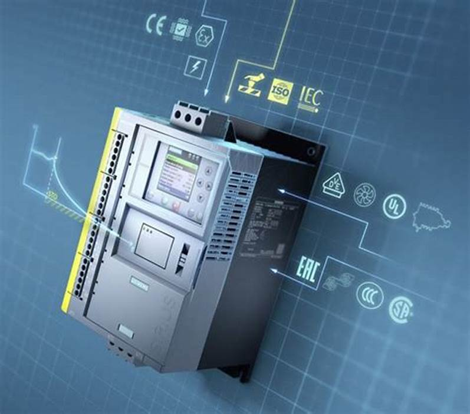

¿Cual es el funcionamiento de PLC?
La operatividad del PLC está basada en procesos periódicos y de sucesión. A continuación explicaremos una secuencia de estos aparatos.
Autodiagnóstico: Es la revisión de todos los circuitos. En caso de presentarse un inconveniente, el dispositivo indica una señal.

- Lectura de entrada y grabación: Evalúa cada entrada para diagnosticar si está en estado de prendido o apagado y graba estos procesos en la memoria, instaurando una imagen.
- Lectura y realización del programa: Utilizando la imagen que se encuentra en la memoria, el ordenador realiza el programa instruido por el usuario.
- Registro y actualización de salidas: En este paso se restaura de manera coetánea todas las salida
Tipos de PLC para la industria
En rasgos generales estos autómatas de clasifican en compactos, modular, banda estrecha, banda baja, montaje en rack, ordenador industrial, software y de ranura.
En el mercado actual existe una gran gama de PLC disponibles para cada necesidad de automatización, siendo los más reconocidos por su calidad y seguridad los fabricados por las marcas Siemens y Allen Bradley. El primero goza del dominio en el mercado asiático, así como el europeo y el segundo tiene la hegemonía en Estados Unidos. Con relación a los otros continentes ambas marcas tienen receptividad de sus productos.
Presentamos una lista de los modelos PLC más demandados de estas dos potencias tecnológicas para el área industrial.
Siemens: S7-200, S7-300, S7-400, S7-1500. Cada uno de estos modelos tiene disponibles accesorios que serán de utilidad para optimizar los procesos de automatización en las industrias.
Allen Bradley: Sistemas de control de PLC grandes, sistemas de control de PLC pequeños, controladores de procesos, sistemas de control micro PLC. Al igual que los equipos Siemens, estos equipos cuentan con accesorios.